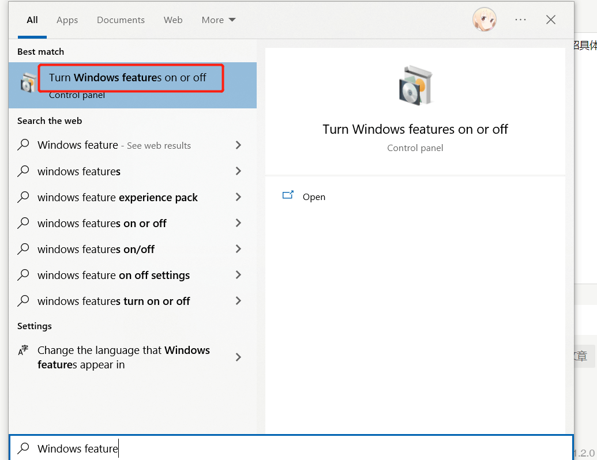

Ubuntu 安装 FTP server
虽然平时可以用 sftp 或 webdav 代替，但是有些时候客户端只支持 ftp 链接，所以介绍下在服务器上安装 ftp server 的简单方法。
系统平台：Ubuntu server 20.04
虽然平时可以用 sftp 或 webdav 代替，但是有些时候客户端只支持 ftp 链接，所以介绍下在服务器上安装 ftp server 的简单方法。
系统平台：Ubuntu server 20.04
Windows 10 以上系统自带 FTP server，可以简单的搭建一个局域网内应用的 FTP 服务器。下面介绍具体操作流程。
搜索 windows feature 打开功能开关配置界面：

一直在使用 feedly 作为 rss 订阅器阅读文章，基本可以满足我的需求，但是部分站点只能预览摘要，想要阅读全文还打开文章链接。最近发现一个开源免费的 rss 系统，他的特点就是轻量无多于内容，致力于阅读体验。同时我发现他的一些独有功能，可以在文章只显示摘要时，有一个下载全文的选项，这样就实现了大部分文章在 rss 阅读器中就可以阅读全文的需求了。
Miniflux 需要自己部署在服务器上，它提供了多种安装方法，最简单的就是 docker 方式，避免手动配置环境及数据库等步骤。
我的系统环境：Ubuntu server 20.04
Miniflux 官网：https://miniflux.app/
GitHub 主页：https://github.com/miniflux/v2
RustDesk 是一款开源的跨平台远程桌面软件，类似于 TeamViewer 的 UI 样式，但它是完全免费的。
RustDesk 提供了 3 个免费的转发服务器，会根据你的地理位置自动选择最快的，一般使用足够了，如果对安全性有担忧，它们也提供了 server 端应用，可以自建转发服务器。下面就对搭建 server 端做一些介绍。
RustDesk GitHub 主页：https://github.com/rustdesk/rustdesk
RustDesk Server GitHub 主页：https://github.com/rustdesk/rustdesk-server
服务器平台：ubuntu 20.04
joplin 是一款开源笔记应用，全平台适用，支持多种云端同步方式。最近体验了下感觉不错，尤其是可以自行搭建 server 服务端保存数据，适合喜欢管理整个数据流程的人士。下面介绍如何在服务器通过 docker 搭建 joplin server 的方法。
joplin 官网：https://joplinapp.org/
GitHub 主页：https://github.com/laurent22/joplin
各个平台客户端下载：https://joplinapp.org/download/
我的服务器系统平台是 Ubuntu 20.04。